THE PEOPLE BEHIND RE-MIND
RE-MIND brings together 11 partner organizations from 7 European countries, united by a shared commitment to creating more mindful, inclusive, and engaging museum experiences. Through cross-border collaboration, partners from Serbia, Italy, Croatia, Poland, Slovenia, Bosnia and Herzegovina, and North Macedonia contribute their expertise, knowledge, and cultural perspectives to drive innovation and lasting impact across Europe's museum sector.
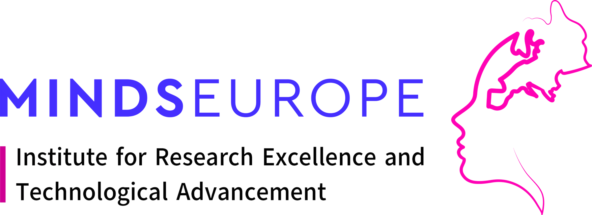
As coordinator of RE-MIND, MEU leads the development of the Mindful Museum model, helping museums and educational spaces become more accessible, reflective and people-centered.
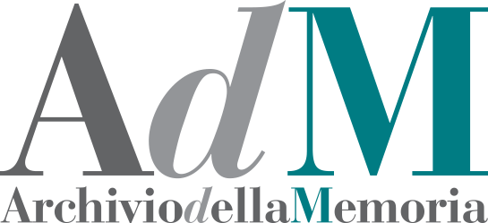
Within RE-MIND, AdM leads the development of the Mindful Museum Education and Outreach Model and Training Toolkit, helping create inclusive and digitally balanced museum experiences.
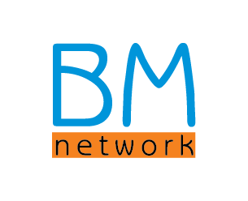
Within the RE-MIND project, BMN leads Work Package 5: "Implementation and Validation of the Mindful Museum Capacity-Building Model," coordinating showcase events and many more.
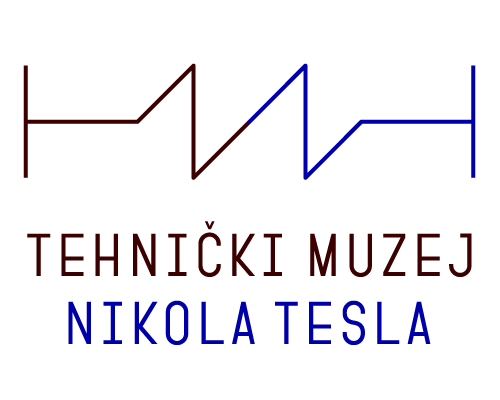
As a partner in the RE-MIND Project, TMNT contributes to audience engagement activities and supports the implementation and validation of the Mindful Museum Capacity-Building Model.
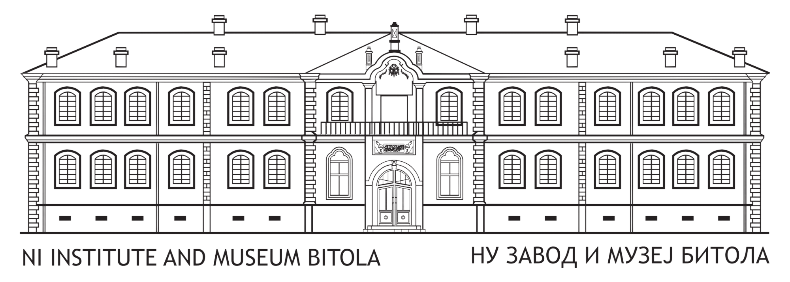
NIIMB will help pilot and validate the Mindful Museum model, fostering meaningful intergenerational engagement and innovative cultural experiences.
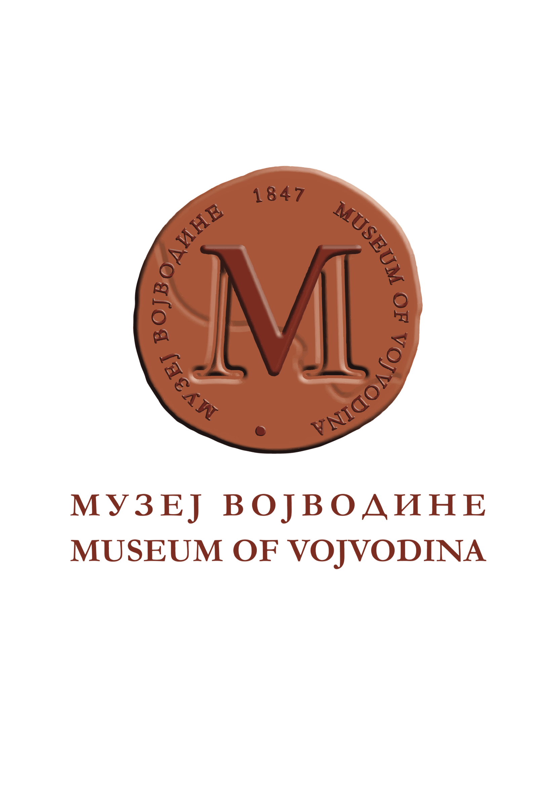
Within RE-MIND, it contributes as an advisor and actively supports audience engagement and the implementation of the Mindful Museum Capacity-Building Model.
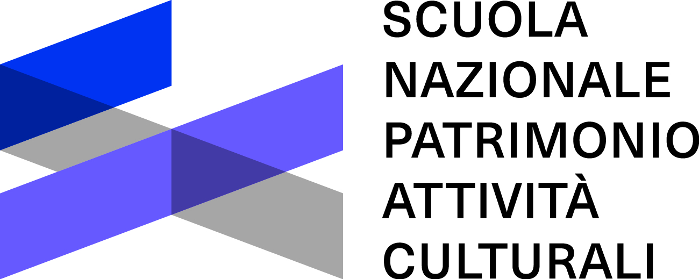
As a partner, Scuola contributes to the development, testing, and validation of the Mindful Museum model.
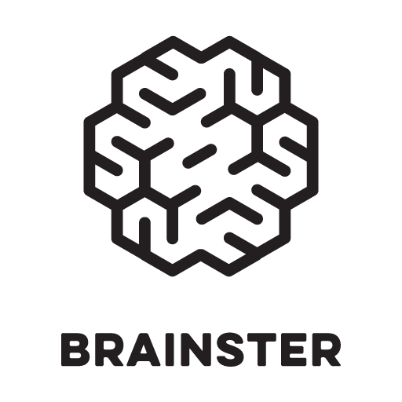
Brainster leads the Communication and Dissemination Work Package, developing the project's branding, visual identity, and communication strategy.
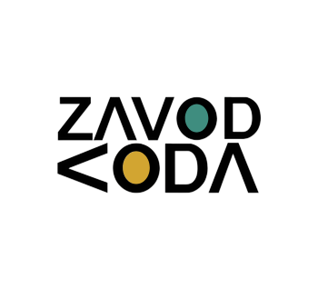
KODA leads the Quality Assurance, Ethics, and Evaluation strand, ensuring that project activities and outcomes remain aligned with ethical principles, standards and accountability.
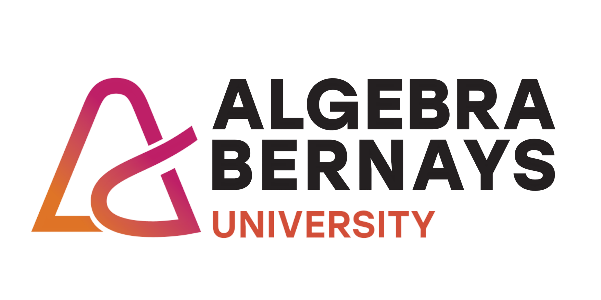
Algebra Bernays University leads Work Package 3, developing the RE-MIND Smart Learning Ecosystem for micro-credentialing and institutional endorsement.
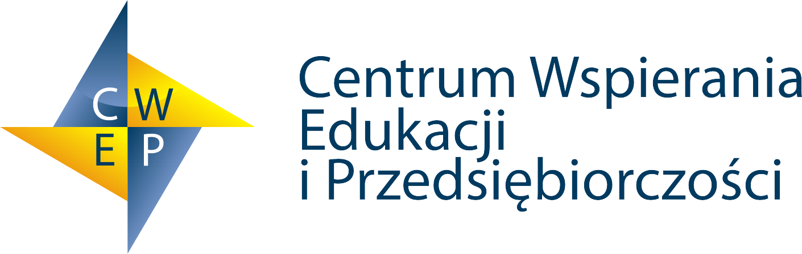
CWEP leads WP4: Education and Intergenerational Audiences Engagement in Mindful Museum Experiences.